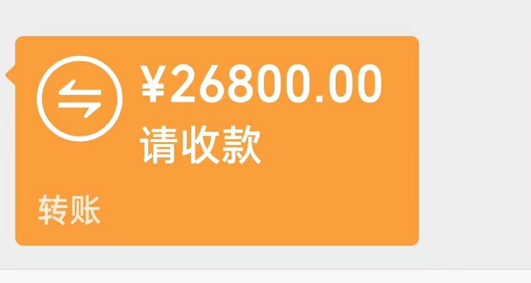

20260918培训学生回去接孩子去了，希望指点孩子
原始对话记录一研究生学生，报国奖校奖
说自己没有分
不敢报，我说，报国奖
两万
要七人
校奖要三人，一万
结果，二百分，三百分的都报了校奖
她一共凑了180分
中了国奖第六
[呲牙][呲牙][呲牙][呲牙]
两万到手了
出奇制胜
真人神通第一[强][强][强]
[憨笑][憨笑][憨笑][憨笑]
[强][强][强]
[强][强][强]
[强][强][强]





还有一个没交，三个没学
此处应该有掌声
[鼓掌][鼓掌][鼓掌][鼓掌][鼓掌][鼓掌]
[鼓掌][鼓掌][鼓掌][鼓掌][鼓掌][鼓掌]
有钱人[强][强][强]
我给他们减免，都不乐意
说明对教学的认可
一帮人回去接孩子去了，希望指点孩子
[鼓掌][鼓掌]
孩子五分钟身体全热
[强][强][强]
必须有实力
[强][强][强]
[鼓掌][鼓掌][鼓掌][鼓掌][鼓掌][鼓掌]
学生问奖与"回去指点孩子"：一则群聊记录
一、本页是什么
这是一页群聊记录，内容分两截：前半是一位研究生的奖学金申报过程，后半才与标题相关——一群人"回去接孩子去了，希望指点孩子"。中间还夹着几张图片。整理时把两截分开讲。
二、"不敢报"到"中了第六"
原文大意：一位研究生学生，报国奖校奖，"说自己没有分，不敢报"，被劝"报国奖"。国奖两万、要七人；校奖要三人、一万。结果"二百分、三百分的都报了校奖"，而她"一共凑了180分"，却"中了国奖第六"，"两万到手了"。作者评一句"出奇制胜"。
从这件事能读出一个朴素道理：申报的"门槛设定"与人群选择，往往比绝对分数更关键。别人扎堆的地方，避开反而有机会。
三、"回去接孩子"：家长想请教什么
后半原文是：
"一帮人回去接孩子去了，希望指点孩子。"
这句话背后的需求很清楚：这批准学员自己也是家长，接孩子回家后想请教怎么带。和本集群其余各篇一样，都属于"家长求教"的语境——他们问的不是法术，是日常怎么处、怎么管。
四、"孩子五分钟身体全热"这句怎么读
原文另有一句"孩子五分钟身体全热"，接在"希望指点孩子"之后。按本站立场要说明：
- 这属于门内对口传功夫的转述，本文不作功效承诺；
- 不建议读者据此对儿童做任何训练；涉及儿童身体的做法，应以安全为前提，必要时咨询专业人士。
（可参见《练功的孩子，功能稳定，并且多样化》一文的相关说明。）
五、从申报到带娃：共通的判断
把前半后半合起来看，作者反复用的其实是同一种思路：
| 场景 | 判断 |
|---|---|
| 报奖 | 不跟风扎堆，"出奇制胜" |
| 带孩子 | 给方向、做日常，别只看眼前 |
| 心态 | 该报就报，别"不敢" |
呼应了《教育孩子有紧迫感》里"该自己干的就放手"。
六、常见问题
问：真能"180分中第六"吗？ 本页只是记录一次申报结果，个案而已。评奖规则各异，请以官方通知为准。
问："孩子五分钟身体全热"是功法吗？ 原文只有一句，没有方法细节。本页不作转述推广，儿童相关做法请谨慎。
问：家长该怎么"指点孩子"？ 本集群其他篇给了参考方向：立底线、放日常、别过头（参见《别过分管孩子》）。
七、提醒
- 本页是群聊记录的整理，涉及评奖部分以官方规则为准；
- 涉及儿童身体的说法仅作民俗转述，不作推广，请勿据此自行训练；
- 孩子教育与健康问题，应求助正规学校与专业机构。